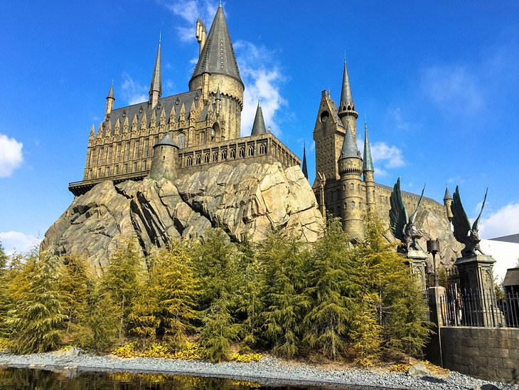
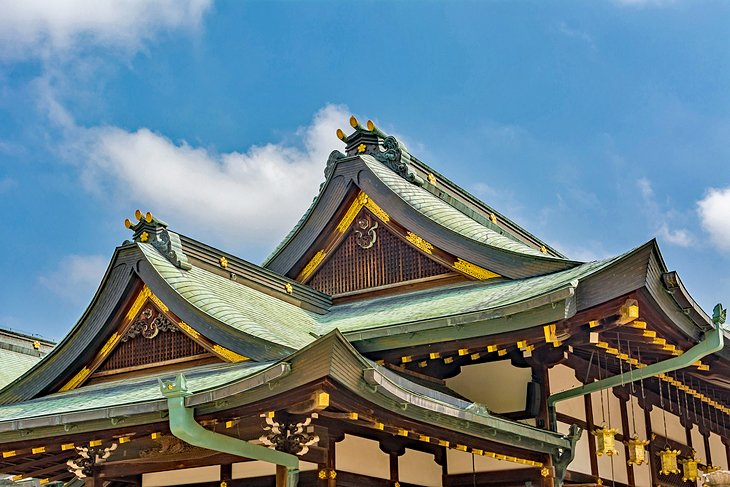
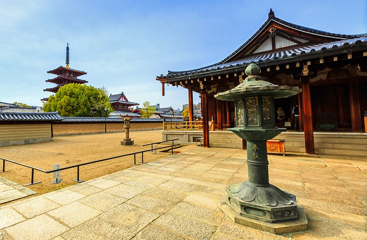
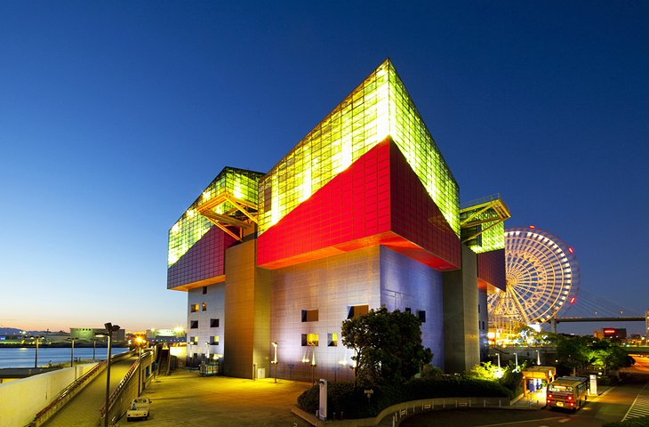

Osaka Castle
Osaka Castle (Ōsaka-jō) was completed in 1586 and took just three years to build.
Ordered built by famed Japanese warrior and politician Toyotomi Hideyoshi it was, at the time, the largest castle in Japan.
Almost all Hideyoshi's military commanders were required to contribute stones for its construction, the largest being the Higo-ishi stone,
near the south entrance. Standing nearly six meters high and 14.5 meters long, it was contributed to by the celebrated General Kato Kiyomasa
from the island of Shodo.
1/5

Osaka Castle
Universal Studios Japan
One of the city's newest attractions,
and quickly becoming one of the top things to do in Osaka, Universal Studios Japan is also one of the city's busiest sites,
attracting around 10 million visitors each year. One of five Universal theme parks worldwide,
the Osaka location offers a number of well-known pop-culture franchises, along with a few unique to the location.
2/5

Universal Studios Japan
Tenmangu Shrine and the Tenjin Festival
Osaka also happens to be the host city of one of Japan's largest annual festivals.
The Tenjin Festival (Tenjin Matsuri) has been held here for more than 1,000 years on the same date,
July 24 and 25. It features colourful processions held both on land and on water and culminates with a spectacular fireworks display.
3/5

Tenmangu Shrine and the Tenjin Festival
Shitennō-ji Temple
Shitennō-ji is Osaka's best-known temple and can trace its roots back to AD 59.
It was also Japan's first Buddhist temple. Although rebuilt numerous times through the centuries (the most recent reconstruction took place in the 1960s),
this lovely temple remains the oldest such religious site to be officially administered.
4/5

Shitennō-ji Temple
Osaka Aquarium Kaiyukan
Looking a little as if it might be made of giant Lego blocks,
the Osaka Aquarium Kaiyukan is well worth exploring. One of the world's biggest such attractions, this walk-through aquarium takes guests
on a fascinating tour of a number of marine habitats. These include the Pacific
Ocean and Antarctica, along with the Great Barrier Reef and Monterey Bay.
5/5

Osaka Aquarium Kaiyukan